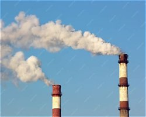

El aire limpio es necesario para respirar. El humo de los carros, de las fábricas y de la basura quemada lo contamina y puede causar enfermedades.
| Qué lo contamina | Qué podemos hacer |
|---|---|
| Humo de carros | Caminar o usar bicicleta |
| Quemar basura | Separarla y no quemarla |
| Fábricas | Plantar árboles |